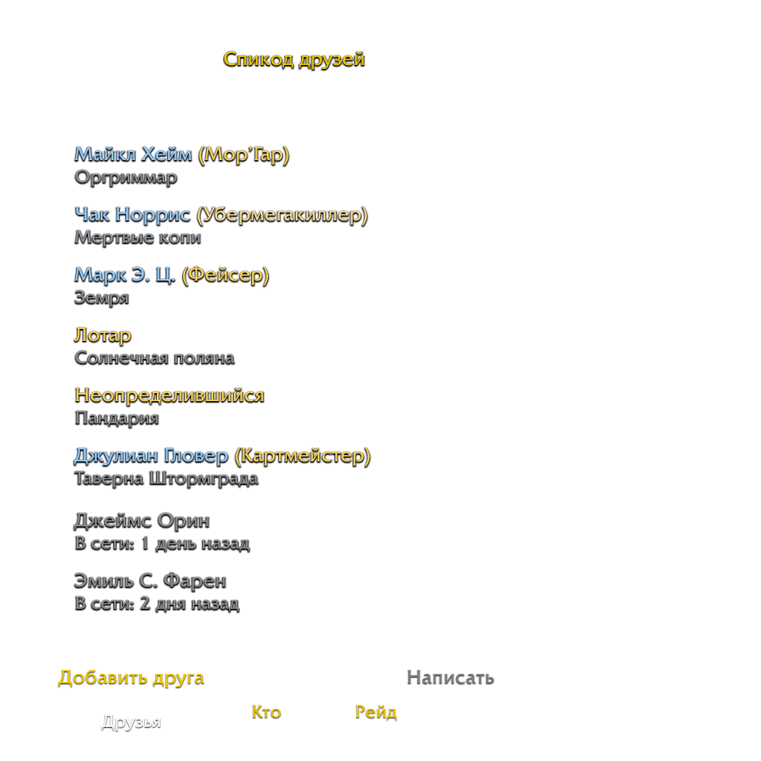
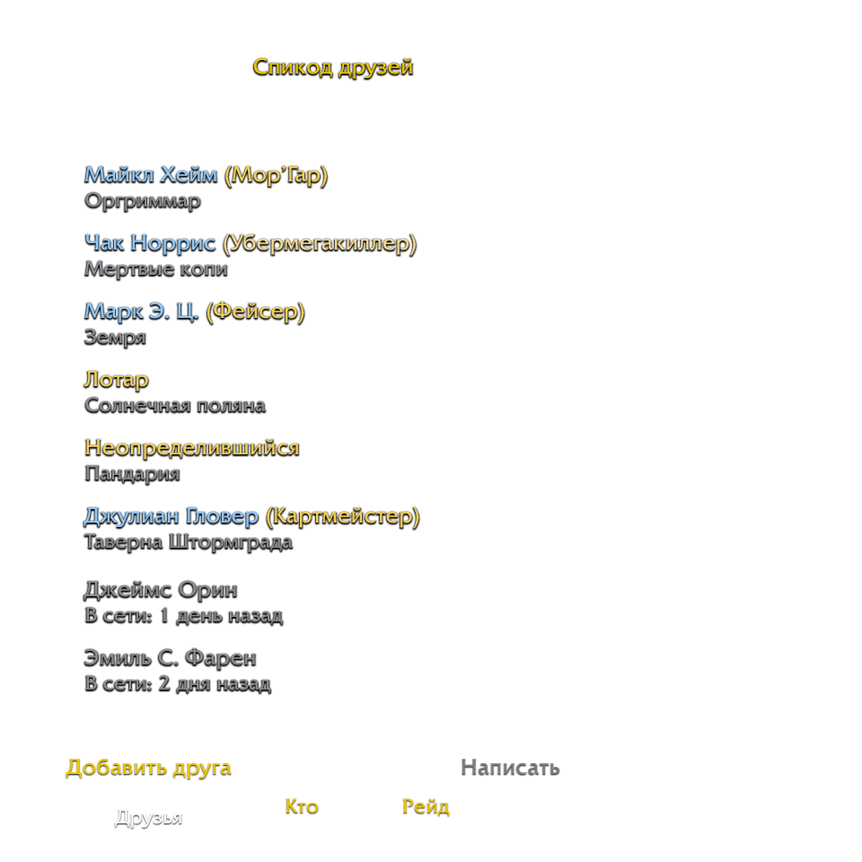

Следи за активностями друзей
У тебя есть друзья по BattleTag'у? Может быть, они играют и за Орду, и за Альянс. А может - даже и в разных мирах... И при этом у них одинаковые имена персонажей. И как тут отследить, в какой игровой мир зашёл твой друг и за какую расу он играет?
Это простейшее расширение с открытым исходным кодом позволит тебе выбрать определённых друзей, статус которых ты хотел бы отслеживать. Кроме того, оно добавляет в окно "Списка друзей" информацию о фракциях всех твои друзей. После того, как ты выберешь, за какими друзьями хечешь следить, при каждом их входе или смене персонажа ты увидешь, на каком сервере играет твой друг, а также его имя и фракцию.
Это расширение доступно на сайте curse.com, либо ты можешь скачать его напрямую из исходников и установить вручную, поместив загруженную дирректорию в корневой каталог вашей игры, в дирректорию Interface/AddOns.
ЗагрузитьИсходный код